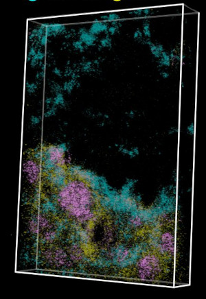

Open-ST: high-resolution spatial transcriptomics in 3D
A spatial transcriptomics method that is easy to use, has subcellular resolution, is cost-efficient and scales to 3D [27], [29]. Open-ST offers integrated H&E staining from the same tissue section and open-source software to process raw sequencing data, align modalities, segment cells, and assemble and interactively explore 3D virtual tissue blocks.